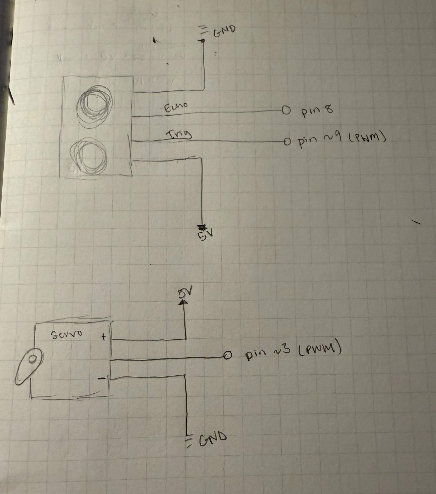
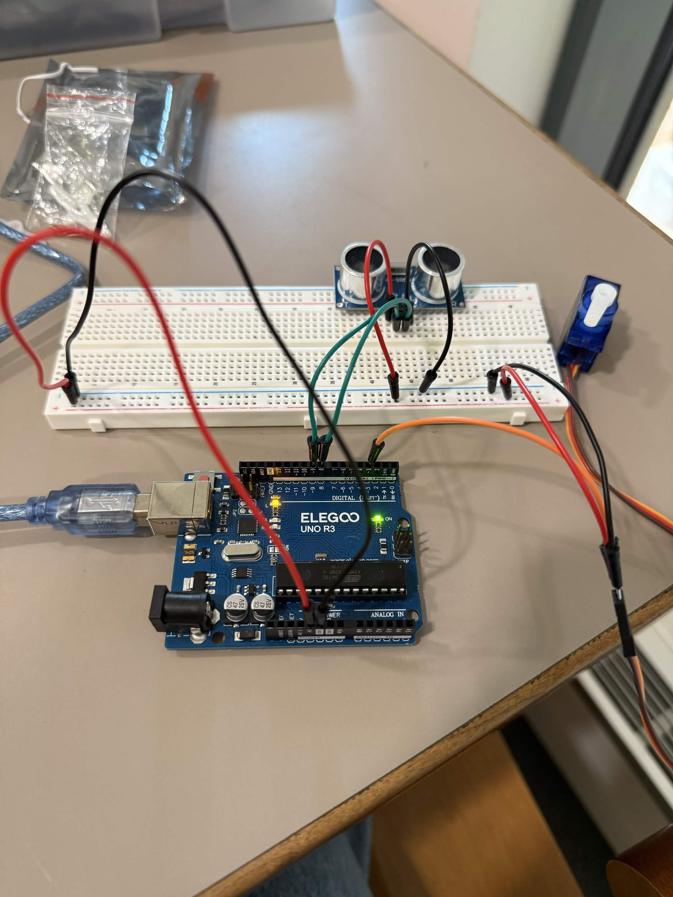
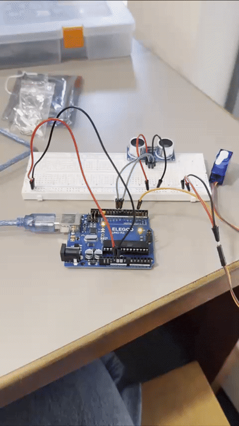
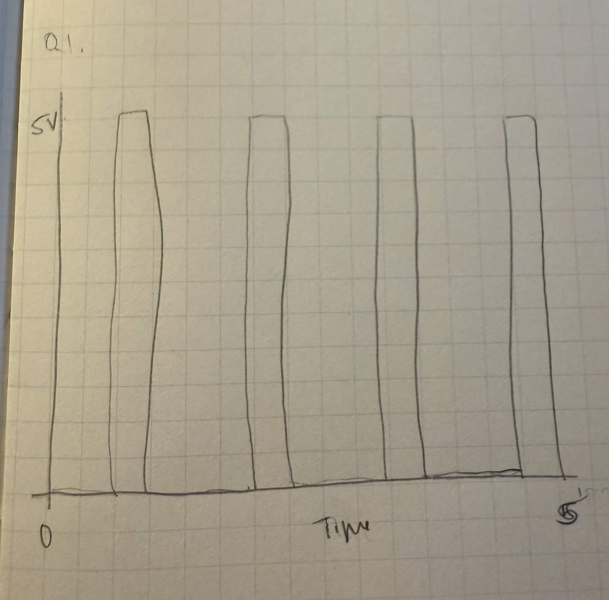

For this assignment, I was tasked with creating a circuit that has an input and output device, while using multiple libraries. I decided to create a system that would mimic a motion sensor trash can by using an ultrasonic sensor to detec object nearby. If someone were to place their hand near the trash can (ultrasonic sensor), the servo motor moves to open the lid.

In this Schematic, the ultrasonic sensor's outer pins are connected to the Ardunio's 5V and GND that provide power for the circuit. The Trig pin is connected to digital pin 9 and the Echo pin is connected to digital pin 8.
The servo motor is connected to digital pin 3 that sends the signals to rotate the motor. The servo's red wire is connected to the 5V ana the brown wire is connected to GND to receive power.
For this circuit, I chose a detection distance of 50 centimeters because I wanted to mimic a scenario where someones hand is close but not too close to use the system without having to touch it. I also chose 0 to 90 degrees for my servo motor positions. The 0 degree represents the trash can as a closed lid and the 90 degree position represents the open lid.
In this circuit, I did not use any resistors because the ultrasonic sensor and servo motor have built in components that allow them to safely operate being directly connected to the Arduino

This is my completed circuit. For this circuit, I used an Arduino, a ultrasonic sensor, a servo motor, a breadboard, and jumper wires. The ultrasonic sensor is connected to the positive and negative rails that are connected to the Arduino 5V and GND pins. The Trig pin of the ultrasonic sensor is connected to digital pin 9, while the Echo pin is connected to pin 8. The servo motor's orange wire is connected to pin 3, the red wire is connected to the positive rail that connects to the Arduino 5V pin, and the brown wire is connected to the negative rail that connects to the GND pin on the Arduino.
This is the snippet of code I created on Arduino! The program takes the ultrasonic sensor to measure the distance of nearby objects. When an object is detected within 50 centimeters, the servo rotates 90 degrees and stays in that position for 2 seconds before moving back to 0 degrees.
In this code, I used both the Servo library to control the servo motor and the NewPing Library to measure the distance of the ultrasonic sensor. I also used serial analog in case I needed to debug my circuit to see if it was collecting values or not.
// // Include the Servo library to control the servo motor.
#include
// Include the NewPing library to measure distance from ultrasonic sensor.
#include
// Defining the Arduino pin connected to the Trig pin.
const int TRIG_PIN = 9;
// Defining the Arduino pin connected to the Echo pin.
const int ECHO_PIN = 8;
// Defining the Arduino pin connected to the servo signal wire.
const int SERVO_PIN = 3;
// Defining the max distance the ultrasonic sensor will measure/detect in centimeters.
const int MAX_DIST = 0;
// Defining the distance threshold for detecting a nearby hand in centimeters.
const int DISTANCE_THRESH= 50;
// Creates a NewPing object using the trig pin, echo pin, and max distance.
NewPing sonar(TRIG_PIN, ECHO_PIN, MAX_DIST);
// Creates a servo object to control the servo motor
Servo myServo;
// Run this code once when the Arduino starts.
void setup() {
// Initialize the Serial Monitor at 9600 baud
Serial.begin(9600);
// Defining or attaching the servo motor to servo_pin (Arduino pin 3).
myServo.attach(SERVO_PIN);
// Move the servo to 0 degrees.
myServo.write(0);
}
// Repeat this code continuously.
void loop() {
// Measures the distance of the nearest object in centimeters.
int distance_cm = sonar.ping_cm();
// Checks whether an object is detected within 50 centimeters.
if (distance_cm > 0 && distance_cm < DISTANCE_THRESHOLD) {
// Rotate the servo to 90 degrees.
myServo.write(90);
// Run this code when an object is not detected within the limit.
} else {
// Return the servo to 0 degrees to close the trash can lid.
myServo.write(0);
}
// Print the distance to the Serial Monitor.
Serial.print("Distance: ");
// Print the measured distance.
Serial.print(distance_cm);
// Print the centimeters unit.
Serial.println(" cm");
// Wait 2 seconds before repeating loop.
delay(2000);
}

This GIF shows the final product of my circuit and Arduino program. Whenever my hand is near and NOT touching the ultrasonic sensor, ther servo motor moves or rotates 90 degrees representing the trash can lid opening. Then after 2 seconds the servo motors rotates back to its original position or 0 degrees representing that the trash can lid is closed.

- This graph shows the signal from Arduino or the power source to the servo motor. The graph shows the servo receiving quick pulses that intermittently switch between 0V and 5V. As the servo rotates the high pulses are longer. The delay(100) line controls how quickly the servo will rotate between positions, which is why the 0V to 5V representation are represented as consistent up down up down motions.
- To address this problem we could take multiple sensor readings instead of just one single measurement. You could take three or more readings and find the median to determine a more reliable measurement. This could help stop an incorrect reading from affecting the output of the circuit.
// Take three measurements from the sensor.
r1 = measureDistance()
r2 = measureDistance()
r3 = measureDistance()
// Sort the readings from smallest to largest.
sort(reading1, reading2, reading3)
// Select the middle value as the reading.
reliableReading = median(reading1, reading2, reading3)
// Check whether the reading is valid.
if reliableReading is valid:
// Check if measured distance is less than 50
if reliableReading < 50:
// does some action
doAction()
else:
// do some other action.
- A way to address this is to take the average of multiple measurements. This could help reduce the influence of fluctuations as the measurements that are a little higher or lower can balance each other out.
// Creating a variable to store the total value.
total = 0
// Repeat the process five times.
for i = 1 to 5:
// Reads the distance from the ultrasonic sensor.
reading = measureDistance()
// Add the reading to the total.
total = total + reading
// Calculate the average of the measurements.
averageDistance = total / 5
// Check whether the average reading is valid.
if averageDistance is valid:
// Check if the measured distance is less than 50 cm.
if averageDistance < 50:
// Perform an action.
doAction()
// Otherwise, perform a different action.
else:
// do another action.
doOtherAction()
- For this assignment, I did not use AI tools to complete this assignment. However, I did use google for the additional questions to better understand the question. I also used google to help me understand more about libraries and the syntax to apply the NewPing library.